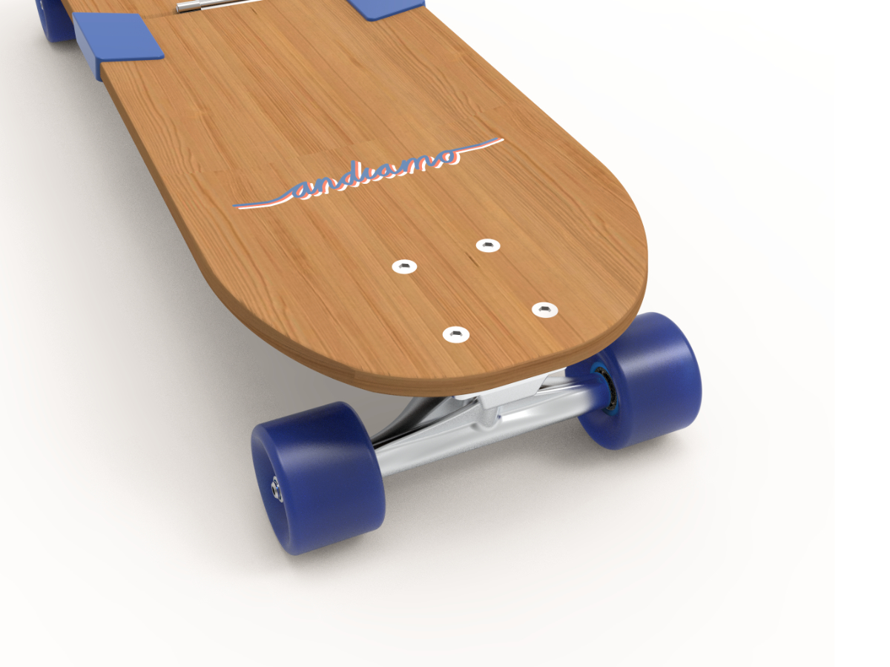

04 — Bachelor Thesis
Andiamo

Context
Human mobility, whether on foot or by vehicle, is essential for experiencing life. Technologies like automobiles have evolved to meet this need but have led to congested streets.
Rethinking Mobility
Alternative methods of transportation, such as the skateboard, are now being explored as ideal solutions for urban mobility.
Design Perspective
In industrial design, efforts focus on sustainable solutions that enhance people's lives.
The Project
This project aims to explore different mechanisms that make the skateboard more transportable, positioning it as a viable form of micromobility that facilitates everyday urban mobility.